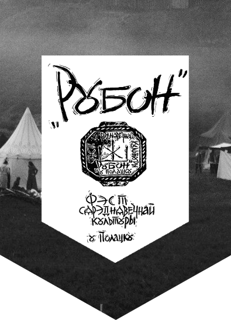

News


20/04/2017
As a separate part of the "Rubon" medieval culture festival in Polatsk the festival of medieval cuisine is planned. It's purpose is to popularize authentic medieval cuisine and the exchange of experience in this field.
More on the medieval cuisine festival in Polatsk